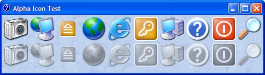

Image List and Alpha Icons (111K)
Image List and Alpha Icons (111K)
 15 Jan 2002
15 Jan 2002
First Posted
 Making VB Apply XP Visual Styles at Design and Debug Time
Making VB Apply XP Visual Styles at Design and Debug Time
 Adding XP Visual Styles to Your Visual Basic Application
Adding XP Visual Styles to Your Visual Basic Application
 Using the System Image List with (and without) vbAccelerator Controls
Using the System Image List with (and without) vbAccelerator Controls
 vbAccelerator ImageList Control and Class v2.0
vbAccelerator ImageList Control and Class v2.0

Displaying Alpha (32bit) Icons with ImageLists
Version 6 of ComCtl32.DLL (shipped with Windows XP) supports icons with alpha channels. This article describes how you can use icons with alpha channels with the vbAccelerator Image Lists.
Using ImageLists to Draw Alpha-Channel Icons
Versions of ComCtl32.DLL prior to 6.0 don't support drawing icons with alpha channels. For this reason, you first need to link your application to ComCtl32.DLL version 6.0. There are two articles which describe how to link your application to ComCtl32.DLL:
Once you've successfully set this up, then you're ready to create an alpha-channel ImageList. If you're using the vbAccelerator Image List Control, then you need to use version 2.0 (released on 14 January 2003) or above in order to persist icons added in the property pages. This was because the previous versions only persisted the icon graphics to a maximum of 24-bit colour resolution, resulting in the alpha channel begin discarded. If you're using the ImageList class or the System Image List then alpha channels are supported.
Then creating an ImageList which supports alpha icons is easy. Just set the ColourDepth to 32-bit (ILC_COLOR32) either prior to adding any images in the control or prior to calling Create in the class.
In Case You Can't
If your system doesn't support ImageLists allowing icons with alpha channels, or doesn't support alpha then trying to draw icons with an alpha channel will look bad:
Icon Drawn correctly with an Alpha Channel
Icon Drawn without Alpha Channel - the Drop Shadow renders all black.
You therefore should check in your application if alpha-icons are supported, and if not, fall back to icons without an alpha channel. There are two reasons why the system may not support alpha channels:
- Using a Pre-Windows XP version of ComCtl32.DLL
- If the system colour depth is less than 32 bits per pixel.
You can check whether the system supports alpha icons with the following code:
General Functions
Private Declare Function CreateDCAsNull Lib "gdi32" Alias "CreateDCA" ( _
ByVal lpDriverName As String, _
lpDeviceName As Any, _
lpOutput As Any, _
lpInitData As Any) As Long
Private Declare Function DeleteDC Lib "gdi32" ( _
ByVal hdc As Long) As Long
Private Declare Function GetDeviceCaps Lib "gdi32" ( _
ByVal hdc As Long, ByVal nIndex As Long) As Long
Private Const BITSPIXEL = 12 ' Number of bits per pixel
Private Const PLANES = 14 ' Number of planes
Private Type DLLVERSIONINFO
cbSize As Long
dwMajor As Long
dwMinor As Long
dwBuildNumber As Long
dwPlatformID As Long
End Type
Private Declare Function LoadLibrary Lib "kernel32" Alias "LoadLibraryA" _
(ByVal lpLibFileName As String) As Long
Private Declare Function FreeLibrary Lib "kernel32" _
(ByVal hLibModule As Long) As Long
Private Declare Function GetProcAddress Lib "kernel32" _
(ByVal hModule As Long, ByVal lpProcName As String) As Long
Private Declare Function DllGetVersion Lib "comctl32" _
(pdvi As DLLVERSIONINFO) As Long
Private Const S_OK = 0
Public Function BitsPerPixel() As Long
Dim lhDCD As Long
Dim lBitsPixel As Long
Dim lPlanes As Long
lhDCD = CreateDCAsNull("DISPLAY", ByVal 0&, ByVal 0&, ByVal 0&)
lBitsPixel = GetDeviceCaps(lhDCD, BITSPIXEL)
lPlanes = GetDeviceCaps(lhDCD, PLANES)
BitsPerPixel = (lBitsPixel * lPlanes)
DeleteDC lhDCD
End Function
Public Function ComCtlVersion( _
ByRef lMajor As Long, _
ByRef lMinor As Long, _
Optional ByRef lBuild As Long _
) As Boolean
Dim hMod As Long
Dim lR As Long
Dim lptrDLLVersion As Long
Dim tDVI As DLLVERSIONINFO
lMajor = 0: lMinor = 0: lBuild = 0
hMod = LoadLibrary("comctl32.dll")
If Not(hMod = 0) Then
lR = S_OK
' You must get this function explicitly because earlier versions
' of the DLL don't implement this function. That makes the
' lack of implementation of the function a version
' marker in itself.
lptrDLLVersion = GetProcAddress(hMod, "DllGetVersion")
If Not(lptrDLLVersion = 0) Then
tDVI.cbSize = Len(tDVI)
lR = DllGetVersion(tDVI)
If (lR = S_OK) Then
lMajor = tDVI.dwMajor
lMinor = tDVI.dwMinor
lBuild = tDVI.dwBuildNumber
End If
Else
'If GetProcAddress failed, then the DLL is a
' version previous to the one shipped with IE 3.x.
lMajor = 4
End If
FreeLibrary hMod
ComCtlVersion = True
End If
End Function
Checking Code
Dim bSupportsAlphaIcons As Boolean
If (BitsPerPixel >= 32) Then
Dim lMajor As Long
Dim lMinor As Long
ComCtlVersion lMajor, lMinor
If (lMajor >= 6) Then
bSupportsAlphaIcons = True
End If
End If